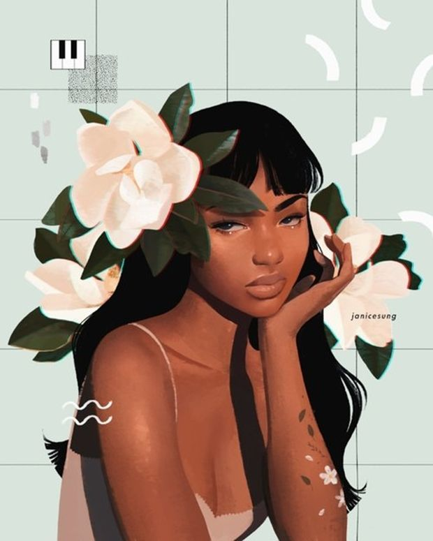

This artwork of a girl was painted by Janice Sung. Sung paints her models with the latest fashion trends mixed with minimal art. Her color palette consists of mainly pastel colors. I really like her art because of the diversity of models she uses and the color palette. Her art is very aesthetically pleasing.